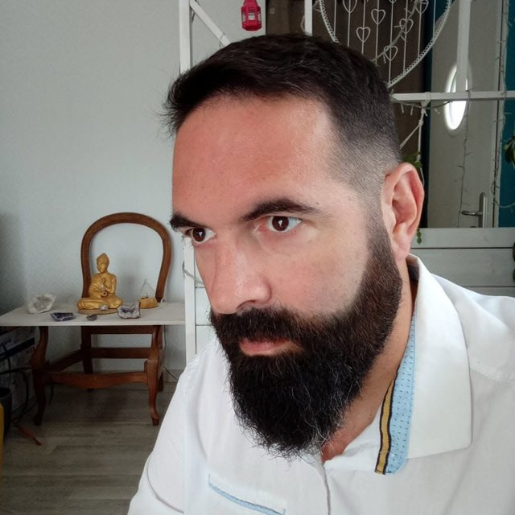

Parcours professionnel
Près de trente ans d'ergothérapie, de la rééducation en neurologie à l'accompagnement à domicile.

Fabien Lefranc
Ergothérapeute D.E. · Réparation juridique du dommage corporel
- Diplômé d'État en 1997
- Près de 30 ans d'expérience
- Charente — intervention France entière
Expérience professionnelle
- Depuis le 1er juillet 2024
Ergothérapeute — SAVS, Charente
Service d'accompagnement à la vie sociale. Suivi d'une cinquantaine de personnes en situation de handicap moteur avec troubles associés, directement à leur domicile.
- Évaluations écologiques de l'autonomie dans les activités de la vie quotidienne
- Préconisation et essais d'aides techniques et de fauteuils roulants
- Aménagement du logement : préconisations, lien avec les artisans
- Argumentaires pour la MDPH (PCH aides techniques, aménagement du logement)
- Travail avec les familles, les aidants et les partenaires
- [Dates à préciser]
Ergothérapeute — SSR Les Glamots
Soins de suivi et de réadaptation. Rééducation et réadaptation de patients en neurologie, préparation du retour à domicile.
- [Dates à préciser]
Ergothérapeute — SSR La Musse
Soins de suivi et de réadaptation. Prise en charge de patients en neurologie et en rééducation fonctionnelle : bilans, rééducation, préconisation d'aides techniques, visites à domicile.
- 1997 – [année]
Ergothérapeute — services de rééducation
Différents postes en rééducation et en neurologie. [Établissements à préciser]
Formation
- Déc. 2026 – mars 2027
DU Réparation juridique du dommage corporel
Faculté de santé — Université de Poitiers
- 1997
Diplôme d'État d'ergothérapeute
[Institut de formation à préciser]
Projet
Créateur d'assistant-ergo.fr
Outil d'aide à la préconisation pour ergothérapeutes : catalogue des VPH (véhicules pour personnes handicapées) et fauteuils roulants pris en charge par l'Assurance maladie (LPPR).
Visiter assistant-ergo.frCompétences clés
- Évaluation écologique
- Neurologie
- Handicap moteur
- Troubles associés
- Aides techniques
- VPH & LPPR
- Aménagement du logement
- Adaptation du véhicule
- Aide humaine
- MDPH · PCH
- CIF
- Nomenclature Dintilhac
- Rédaction de rapports
Des partenaires de confiance
Mes années de pratique et le projet assistant-ergo.fr m'ont permis de tisser des liens solides avec les professionnels de la compensation du handicap.
Revendeurs médicaux
Prêts de matériel pour essais, devis, connaissance des gammes et des délais.
Équipementiers automobiles
Adaptations de conduite et de transport, chiffrage des aménagements.
Artisans du domicile
Salle de bain, accès, circulation : des devis concrets pour les frais de logement adapté.
Parlons de votre dossier
Un premier échange téléphonique, gratuit et sans engagement, permet de voir si mon intervention est utile et à quel moment de la procédure.